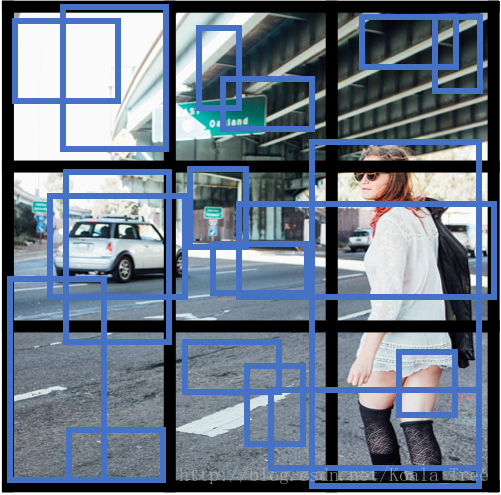
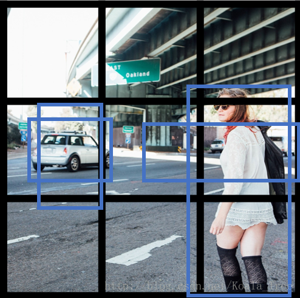
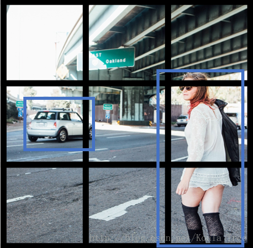

吴恩达Coursera深度学习课程 DeepLearning.ai 提炼笔记（4-3）-- 目标检测
作者： 大树先生
博客： http://blog.csdn.net/koala_tree
知乎：https://www.zhihu.com/people/dashuxiansheng
GitHub：https://github.com/KoalaTree
2017 年 11 月 21 日
以下为在Coursera上吴恩达老师的 DeepLearning.ai 课程项目中，第四部分《卷积神经网络》第三周课程“目标检测”关键点的笔记。本次笔记几乎涵盖了所有视频课程的内容。在阅读以下笔记的同时，强烈建议学习吴恩达老师的视频课程，视频请至 Coursera 或者 网易云课堂。
同时我在知乎上开设了关于机器学习深度学习的专栏收录下面的笔记，以方便大家在移动端的学习。欢迎关注我的知乎：大树先生。一起学习一起进步呀！^_^
卷积神经网络 — 目标检测
1. 目标定位和特征点检测
图片检测问题：
- 分类问题：判断图中是否为汽车；
- 目标定位：判断是否为汽车，并确定具体位置；
- 目标检测：检测不同物体并定位。
目标分类和定位：
对于目标定位问题，我们卷积神经网络模型结构可能如下：
输出：包含图片中存在的对象及定位框
- 行人，0 or 1；
- 汽车，0 or 1；
- 摩托车，0 or 1；
- 图片背景，0 or 1；
- 定位框：
其中，表示汽车中点，分别表示定位框的高和宽。以图片左上角为(0,0)，以右下角为(1,1)，这些数字均为位置或长度所在图片的比例大小。
目标标签 y：
- 当时，表示图片中存在物体；
- 当时，表示图片中不存在物体，那么此时，输出的其他值为多少均没有意义，也不会参与损失函数的计算：
损失函数：
如果采用平方误差形式的损失函数：
- 当时：
此时，我们需要关注神经网络对所有输出值的准确度； - 当时：
此时，我们只关注神经网络对背景值的准确度。
当然在实际的目标定位应用中，我们可以使用更好的方式是：
* 对和softmax使用对数似然损失函数；
* 对边界框的四个值应用平方误差或者类似的方法；
* 对应用logistic regression损失函数，或者平方预测误差。
特征点检测：
由前面的目标定位问题，我们可以知道，神经网络可以通过输出图片上特征点的坐标（x,y），来实现对目标特征的识别和定位标记。
如对于人脸表情识别的问题中，我们通过标定训练数据集中特征点的位置信息，来对人脸进行不同位置不同特征的定位和标记。AR的应用就是基于人脸表情识别来设计的，如脸部扭曲、增加头部配饰等。
在人体姿态检测中，同样可以通过对人体不同的特征位置关键点的标注，来记录人体的姿态。
2. 目标检测
目标检测采用的是基于滑动窗口的检测算法。
训练模型：
- 训练集X：将有汽车的图片进行适当的剪切，剪切成整张几乎都被汽车占据的小图或者没有汽车的小图；
- 训练集Y：对X中的图片进行标注，有汽车的标注1，没有汽车的标注0。
滑动窗口目标检测：
利用滑动窗口在实际图片中实现目标检测。
- 首先选定一个特定大小的窗口，将窗口内的图片输入到模型中进行预测；
- 以固定步幅滑动该窗口，遍历图像的每个区域，对窗内的各个小图不断输入模型进行预测；
- 继续选取一个更大的窗口，再次遍历图像的每个区域，对区域内是否有车进行预测；
- 遍历整个图像，可以保证在每个位置都能检测到是否有车。
缺点：计算成本巨大，每个窗口的小图都要进行卷积运算，（但在神经网络兴起之前，使用的是线性分类器，所以滑动窗口算法的计算成本较低）。
卷积层替代全连接层：
对于卷积网络中全连接层，我们可以利用大小卷积核的卷积层来替代。
在上一周课程中，吴恩达老师讲授过的卷积核相当于在一个三维图像的切片上应用了一个全连接的神经网络。同样，全连接层也可以由大小卷积核的卷积层来替代。需注意卷积核的个数与隐层神经元个数相同。
滑动窗口的卷积实现：
在我们实现了以卷积层替代全部的全连接层以后，在该基础上进行滑动窗口在卷积层上的操作。下面以一个小的图片为例：
我们以上面训练好的模型，输入一个大小的整幅图片，图中蓝色部分代表滑动窗口的大小。我们以2为大小的步幅滑动窗口，分别与卷积核进行卷积运算，最后得到4幅大小的特征图，然而因为在滑动窗口的操作时，输入部分有大量的重叠，也就是有很多重复的运算，导致在下一层中的特征图值也存在大量的重叠，所以最后得到的第二层激活值（特征图）构成一副大小的特征图。对于后面的池化层和全连接层也是同样的过程。
那么由此可知，滑动窗口在整幅图片上进行滑动卷积的操作过程，就等同于在该图片上直接进行卷积运算的过程。所以卷积层实现滑动窗口的这个过程，我们不需要把输入图片分割成四个子集分别执行前向传播，而是把他们作为一张图片输入到卷积神经网络中进行计算，其中的重叠部分（公共区域）可以共享大量的计算。
汽车目标检测：
依据上面的方法，我们将整张图片输入到训练好的卷积神经网络中。无需再利用滑动窗口分割图片，只需一次前向传播，我们就可以同时得到所有图片子集的预测值。
利用卷积的方式实现滑动窗口算法的方法，提高了整体的计算效率。
3. Bounding Box 预测
前面一节的卷积方式实现的滑动窗口算法，使得在预测时计算的效率大大提高。但是其存在的问题是：不能输出最精准的边界框（Bounding Box）。
在滑动窗口算法中，我们取的一些离散的图片子集的位置，在这种情况下，有可能我们没有得到一个能够完美匹配汽车位置的窗口，也有可能真实汽车的边界框为一个长方形。所以我们需要寻找更加精确的边界框。
YOLO：
YOLO算法可以使得滑动窗口算法寻找到更加精准的边界框。
- 在整幅图片上加上较为精细的网格，将图片分割成个小的图片；
- 采用图像分类和定位算法，分别应用在图像的个格子中。
- 定义训练标签：（对于每个网格，定义如前面的向量）
对于不同的网格 有不同的标签向量。 - 将个格子标签合并在一起，最终的目标输出Y的大小为：（这里8是因为例子中的目标值有8个）。
通过这样的训练集训练得到目标探测的卷积网络模型。我们利用训练好的模型，将与模型输入相同大小的图片输入到训练好的网络中，得到大小为的预测输出。通过观察不同位置的输出值，我们就能知道这些位置中是否存在目标物体，然后也能由存在物体的输出向量得到目标物体的更加精准的边界框。
YOLO notation：
- 将对象分配到一个格子的过程是：观察对象的中点，将该对象分配到其中点所在的格子中，（即使对象横跨多个格子，也只分配到中点所在的格子中，其他格子记为无该对象，即标记为“0”）；
- YOLO显式地输出边界框，使得其可以具有任意宽高比，并且能输出更精确的坐标，不受滑动窗口算法滑动步幅大小的限制；
- YOLO是一次卷积实现，并不是在网格上进行次运算，而是单次卷积实现，算法实现效率高，运行速度快，可以实现实时识别。
bounding boxes 细节：
利用YOLO算法实现目标探测的时候，对于存在目标对象的网格中，定义训练标签Y的时候，边界框的指定参数的不同对其预测精度有很大的影响。这里给出一个较为合理的约定：（其他定值方式可阅读论文）
- 对于每个网格，以左上角为(0,0)，以右下角为(1,1)；
- 中点表示坐标值，在0~1之间；
- 宽高表示比例值，存在>1的情况。
4. 交并比（Intersection-over-Union）
交并比函数用来评价目标检测算法是否运作良好。
对于理想的边界框和目标探测算法预测得到的边界框，交并比函数计算两个边界框交集和并集之比。
一般在目标检测任务中，约定如果 ，那么就说明检测正确。当然标准越大，则对目标检测算法越严格。得到的IoU值越大越好。
5. 非最大值抑制（non-max suppression，NMS）
对于我们前面提到的目标检测算法，可能会对同一个对象做出多次的检测，非最大值抑制可以确保我们的算法对每个对象只检测一次。
多网格检测同一物体：
对于汽车目标检测的例子中，我们将图片分成很多精细的格子。最终预测输出的结果中，可能会有相邻的多个格子里均检测出都具有同一个对象。
NMS算法思想：
- 在对个网格进行目标检测算法后，每个网格输出的为一个0~1的值，表示有车的概率大小。其中会有多个网格内存在高概率；
- 得到对同一个对象的多次检测，也就是在一个对象上有多个具有重叠的不同的边界框；
- 非最大值抑制对多种检测结果进行清理：选取最大的边界框，对所有其他与该边界框具有高交并比或高重叠的边界框进行抑制；
- 逐一审视剩下的边界框，寻找最高的值边界框，重复上面的步骤。
- 非最大值抑制，也就是说抑制那些不是最大值，却比较接近最大值的边界框。
NMS算法：
以单个对象检测为例：
- 对于图片每个网格预测输出矩阵：，其中表示有对象的概率；
- 抛弃 的边界框；
- 对剩余的边界框（while）：
- 选取最大值的边界框，作为预测输出边界框；
- 抛弃和选取的边界框的剩余的边界框。
对于多对象检测，输出标签中就会有多个分量。正确的做法是：对每个输出类别分别独立进行一次非最大值抑制。
6. Anchor box
通过上面的各种方法，目前我们的目标检测算法在每个格子上只能检测出一个对象。使用Anchor box 可以同时检测出多个对象。
重叠目标：
对于重叠的目标，这些目标的中点有可能会落在同一个网格中，对于我们之前定义的输出：，只能得到一个目标的输出。
而Anchor box 则是预先定义多个不同形状的Anchor box，我们需要把预测目标对应地和各个Anchor box 关联起来，所以我们重新定义目标向量：
用这样的多目标向量分别对应不同的Anchor box，从而检测出多个重叠的目标。
- 不使用Anchor box：训练图片中的每个对象，根据对象的中点，分配到对应的格子中。输出大小（例如8）：；
- 使用Anchor box：训练图片的每个对象，根据对象的中点，分配到对应的格子中，同时还分配到一个和对象形状的IoU最高的Anchor box 中。输出大小（例如两个Anchor box）：。
例子：
如下面的图片，里面有行人和汽车，我们为其分配两个Anchor box。对于行人形状更像Anchor box 1，汽车形状更像Anchor box 2，所以我们将人和汽车分配到不同的输出位置。
如果格子中只有汽车的时候，我们使用了两个Anchor box，那么此时我们的目标向量就成为：
其中，“？”代表的是该位置是什么样的参数我们都不关系。
难点问题：
- 如果我们使用了两个Anchor box，但是同一个格子中却有三个对象的情况，此时只能用一些额外的手段来处理；
- 同一个格子中存在两个对象，但它们的Anchor box 形状相同，此时也需要引入一些专门处理该情况的手段。
但是以上的两种问题出现的可能性不会很大，对目标检测算法不会带来很大的影响。
Anchor box 的选择：
- 一般人工指定Anchor box 的形状，选择5~10个以覆盖到多种不同的形状，可以涵盖我们想要检测的对象的形状；
- 高级方法：K-means 算法：将不同对象形状进行聚类，用聚类后的结果来选择一组最具代表性的Anchor box，以此来代表我们想要检测对象的形状。
7. YOLO算法目标检测
假设我们要在图片中检测三种目标：行人、汽车和摩托车，同时使用两种不同的Anchor box。
训练集：
- 输入X：同样大小的完整图片；
- 目标Y：使用网格划分，输出大小，或者
- 对不同格子中的小图，定义目标输出向量Y。
模型预测：
输入与训练集中相同大小的图片，同时得到每个格子中不同的输出结果：。
运行非最大值抑制（NMS）：
- 假设使用了2个Anchor box，那么对于每一个网格，我们都会得到预测输出的2个bounding boxes，其中一个比较高；
 - 抛弃概率值低的预测bounding boxes；
 - 对每个对象（如行人、汽车、摩托车）分别使用NMS算法得到最终的预测边界框。

8. 候选区域（region proposals）
R-CNN：
R-CNN（Regions with convolutional networks），会在我们的图片中选出一些目标的候选区域，从而避免了传统滑动窗口在大量无对象区域的无用运算。
所以在使用了R-CNN后，我们不会再针对每个滑动窗口运算检测算法，而是只选择一些候选区域的窗口，在少数的窗口上运行卷积网络。
具体实现：运用图像分割算法，将图片分割成许多不同颜色的色块，然后在这些色块上放置窗口，将窗口中的内容输入网络，从而减小需要处理的窗口数量。
更快的算法：
- R-CNN：给出候选区域，对每个候选区域进行分类识别，输出对象 标签 和 bounding box，从而在确实存在对象的区域得到更精确的边界框，但速度慢；
- Fast R-CNN：给出候选区域，使用滑动窗口的卷积实现去分类所有的候选区域，但得到候选区的聚类步骤仍然非常慢；
- Faster R-CNN：使用卷积网络给出候选区域。
本周（Week3）的课后编程作业请参见：